Faculdade
Ciência da Computação.
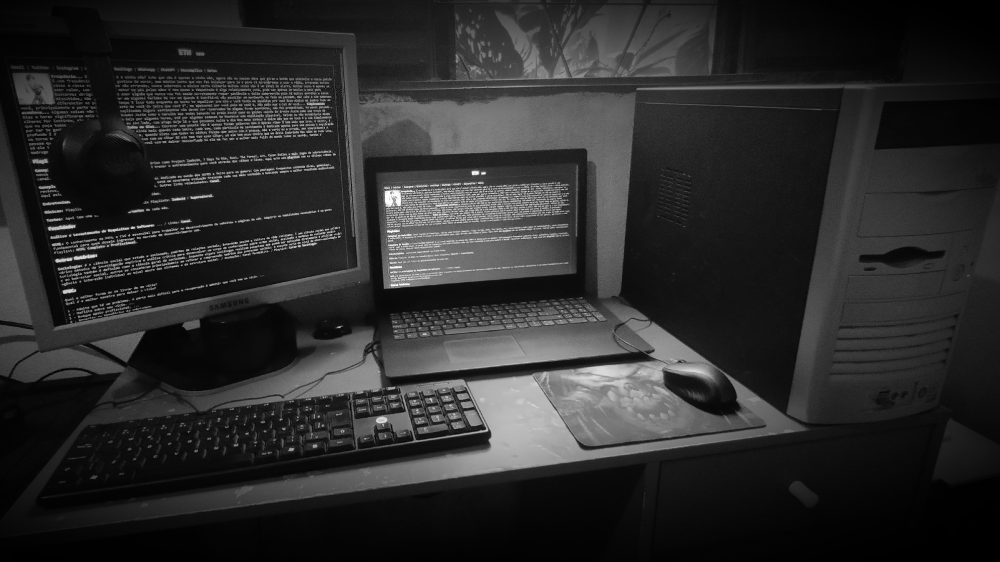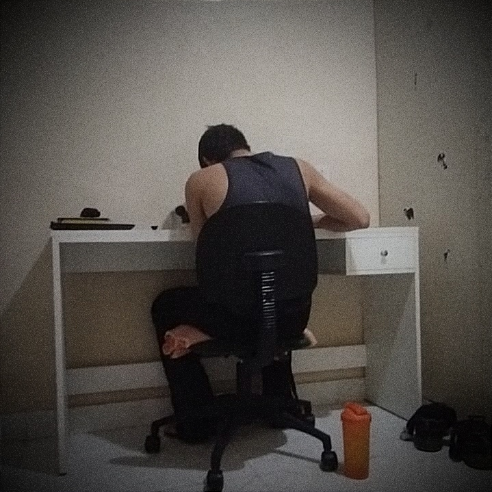 A faculdade de Ciências da Computação oferece uma formação sólida e abrangente no mundo da tecnologia e programação. Durante o curso, os alunos exploram áreas fundamentais como algoritmos, estruturas de dados e arquitetura de computadores, além de se aprofundarem em linguagens de programação e desenvolvimento de software.
BLSK
Força, resistência e movimento.
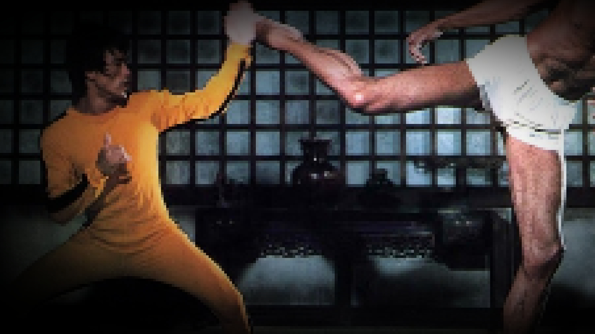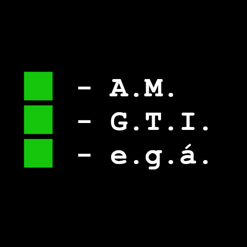 Um estilo de vida que integra musculação, alongamentos e lutas é a chave para um corpo forte e saudável. A musculação proporciona ganho de força e massa muscular, enquanto os alongamentos aumentam a flexibilidade e previnem lesões. As lutas, por sua vez, não só melhoram a resistência cardiovascular, mas também ensinam disciplina e autoconfiança.

GTI
Conhecimento além das distrações.
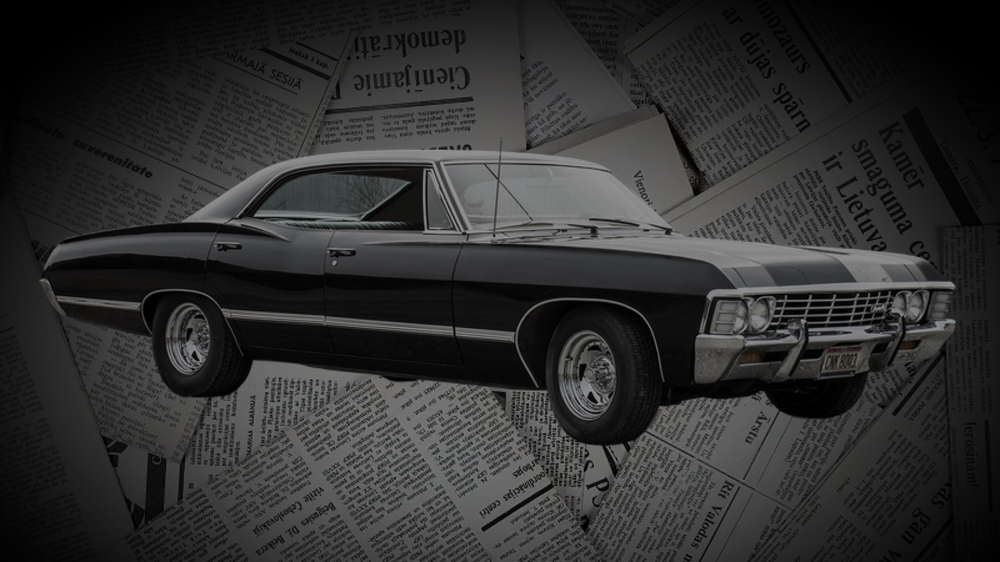Leitura e informação são fundamentais para quem deseja crescer pessoalmente e se manter à frente em um mundo cheio de distrações. Enquanto o entretenimento vazio pode consumir seu tempo, escolher se dedicar a temas relevantes amplia seu conhecimento e fortalece sua visão crítica. Mantenha-se atualizado com o que realmente faz a diferença, evitando as armadilhas...
Inglês
Ferramenta essencial.
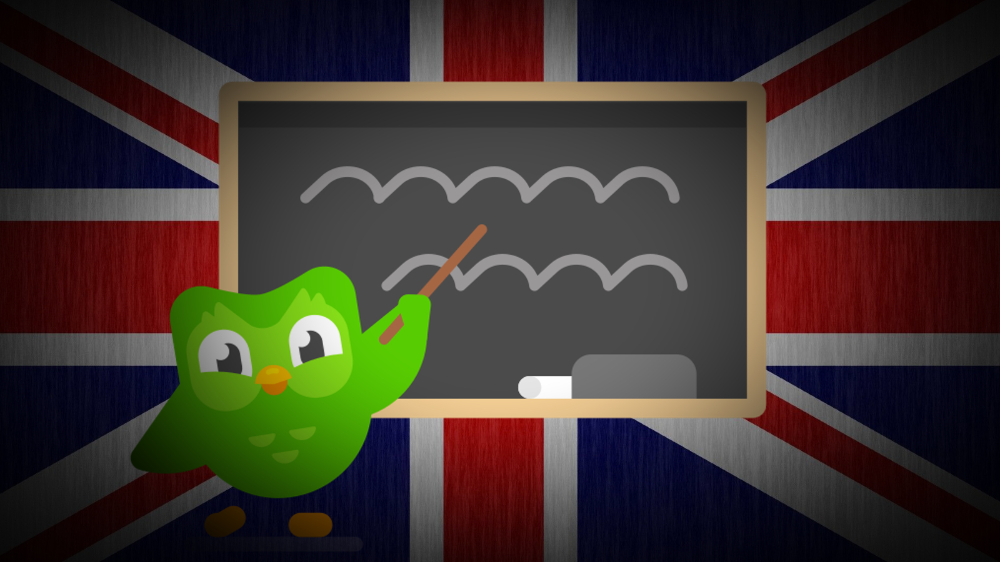O inglês é essencial para quem atua na área de computação e jogos, pois a maioria dos recursos, documentações e ferramentas são escritos nesse idioma. Desde linguagens de programação até fóruns de desenvolvedores, como o Stack Overflow, o inglês é a língua padrão. Na indústria de jogos, o domínio do inglês permite acesso a tutoriais...
Digitação
Teclados, digitação e eficiência.
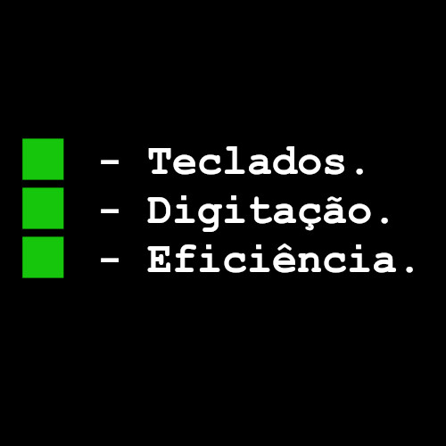 Praticar a digitação regularmente traz uma série de benefícios surpreendentes! Além de aumentar a produtividade, ela melhora a precisão e a velocidade com que você escreve, economizando tempo em tarefas diárias. Ao dominar essa habilidade, você também reduz o cansaço nas mãos e evita dores comuns causadas pela digitação lenta ou incorreta. Com o tempo...
Outros
Outras informações.
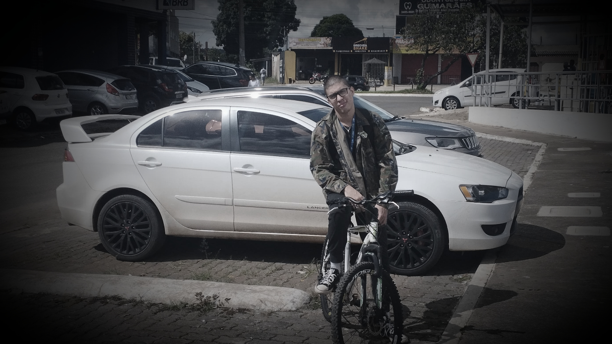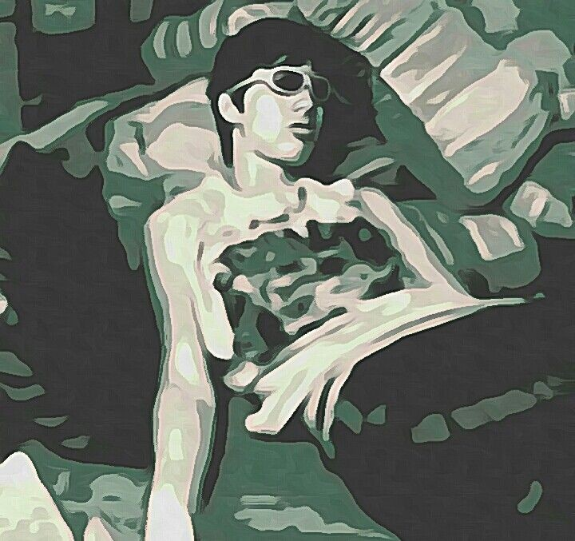 Montar um PC é um hobby fascinante para quem curte tecnologia e personalização. Você escolhe cada peça com base no que precisa, ajustando o desempenho ao seu gosto e orçamento. É como montar um quebra-cabeça em que tudo precisa se encaixar: processador, placa-mãe, RAM, placa de vídeo, SSD e fonte. Além de ser divertido, dá uma sensação de realização...
Poesias
Ana com A.
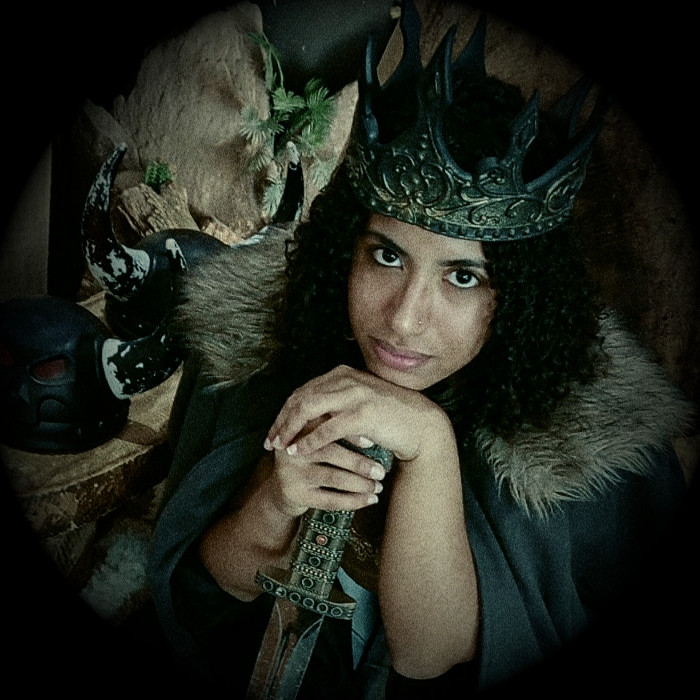 Frequência... É um botão ou é a minha mão? Acho que não é apenas a minha mão, agora são as nossas mãos que giram o botão que sintoniza a nossa paixão É uma frequência... diferente, gostosa de ouvir, uma música lenta que nos faz balançar para lá e para cá Aprenderemos a usar o rádio, erraremos muitas vezes a nossa estação...
Diário ETH
Relatório PaP.
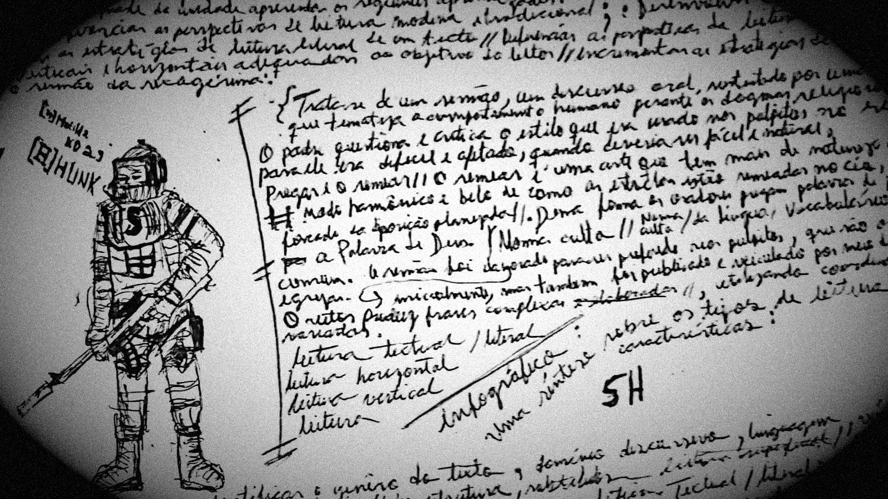Anotar suas tarefas e atividades é fundamental para melhorar a produtividade e a organização. Essa prática proporciona clareza e foco, permitindo uma visão estruturada das suas obrigações e ajudando a priorizar o que é mais importante. Além disso, reduz o estresse ao diminuir a necessidade de lembrar de tudo...
Texto
Arquivos txt.
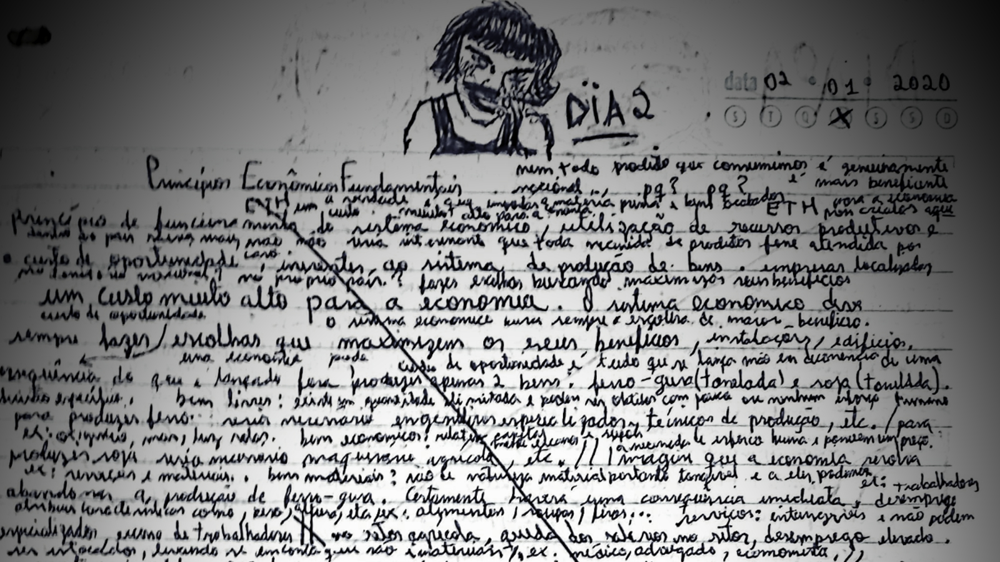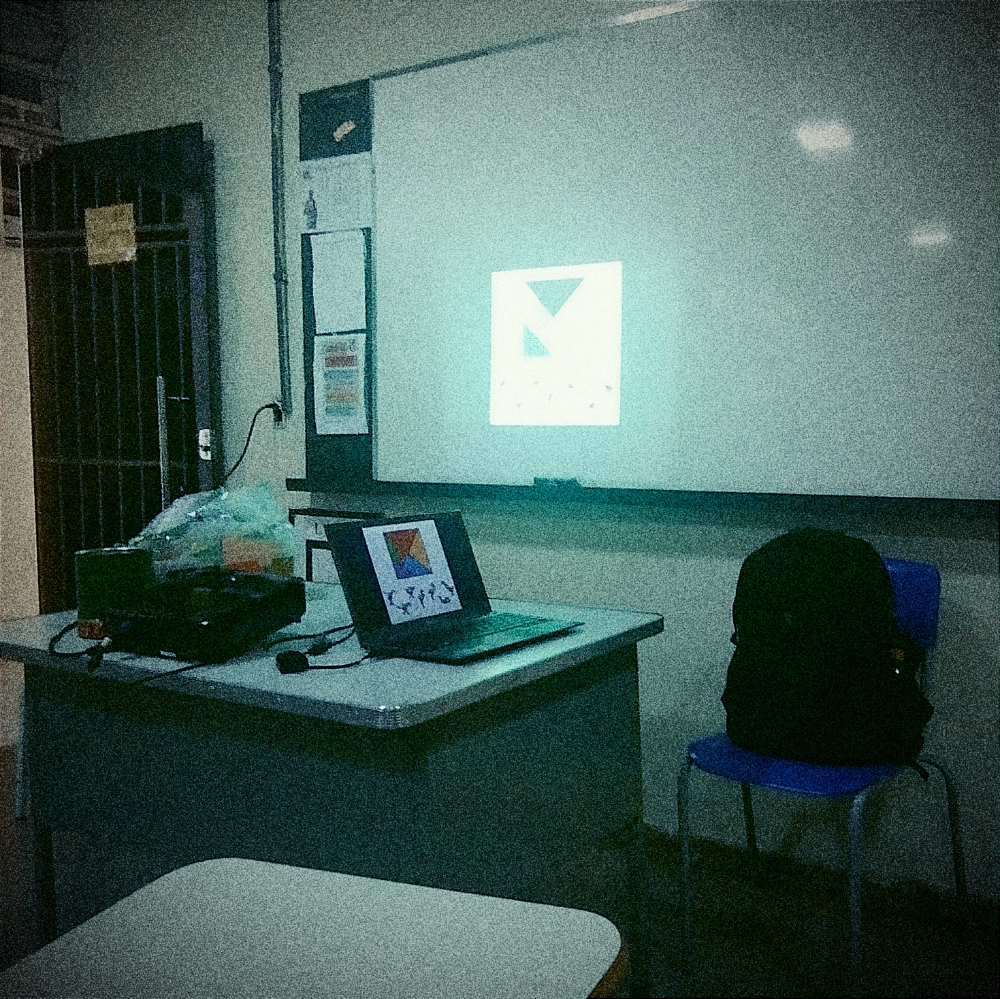 Arquivos TXT (ou arquivos de texto) são um dos formatos mais simples e amplamente utilizados no mundo da computação. Eles armazenam dados de forma simples, utilizando apenas texto bruto sem qualquer tipo de formatação avançada, como negrito ou sublinhado. Devido à sua simplicidade, os arquivos TXT podem ser abertos...
Konga
Bytes que despertam sentimentos.
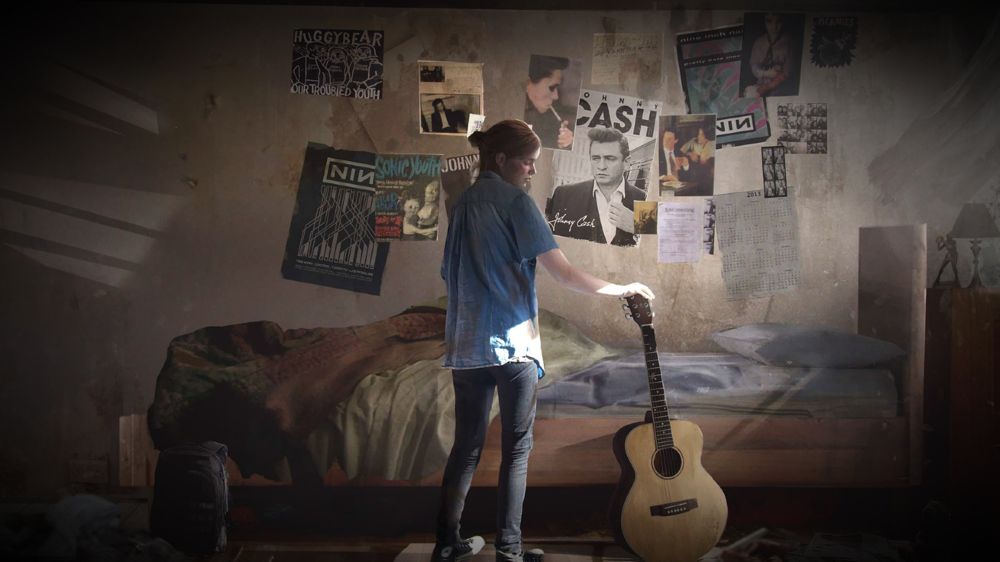A música é a minha companheira constante, ajudando a passar o tempo de uma maneira única. Como alguém com um gosto musical extremamente eclético, eu não me limito a um gênero ou estilo. Escuto de tudo: do rock clássico ao indie, do rap ao samba, da eletrônica à música erudita. Cada som tem seu momento e seu papel. Se preciso relaxar...
Lancer
Eficiência, otimização, funcionalidade.
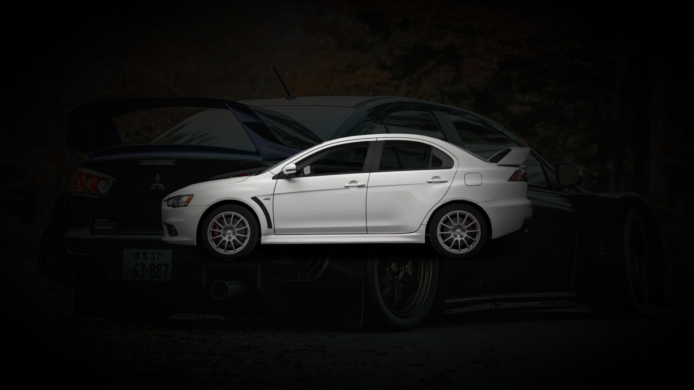Ser minimalista em 2024 traz diversos benefícios em um mundo cada vez mais caótico e consumista. Adotar um estilo de vida minimalista significa priorizar o essencial, economizando tempo, dinheiro e energia. Com menos distrações e objetos acumulados, você pode focar no que realmente importa, seja nos relacionamentos...
AM
Andarilho e MaxMRM.
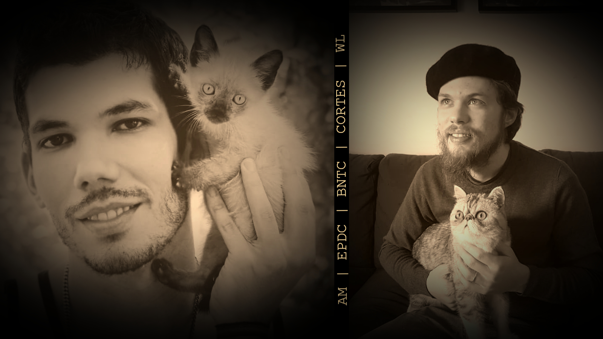Esta seção foi criada para reunir uma coleção variada de links, vídeos e informações que podem ser úteis e interessantes. O objetivo é proporcionar um espaço dinâmico onde diferentes tipos de conteúdo possam ser acessados com facilidade, oferecendo desde recursos educativos até entretenimento. Aqui, você encontrará...